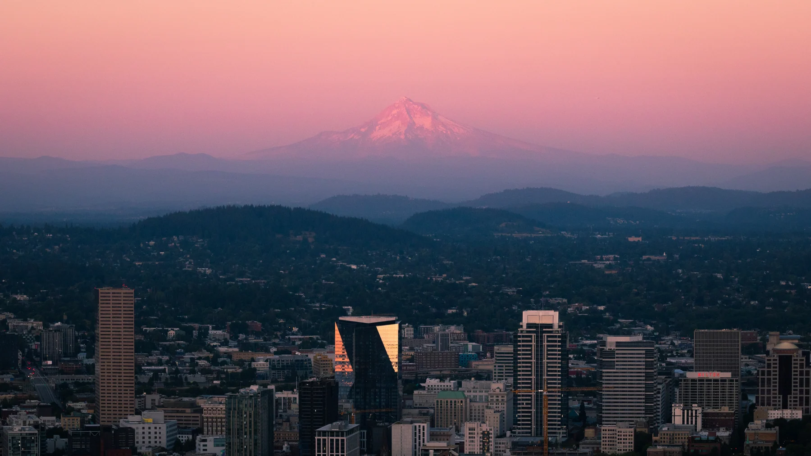
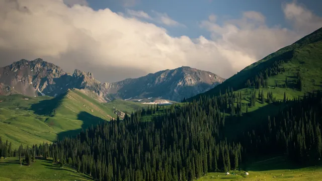
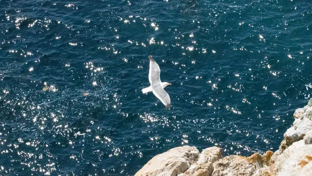
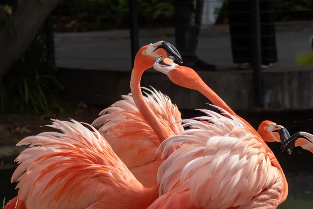
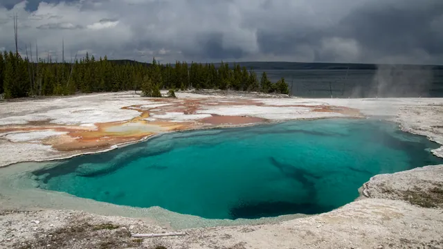
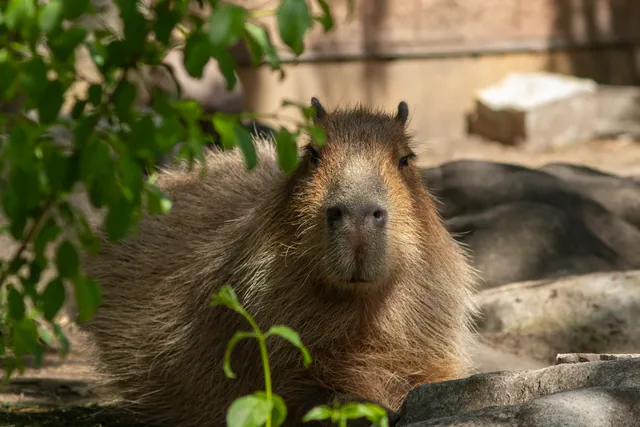
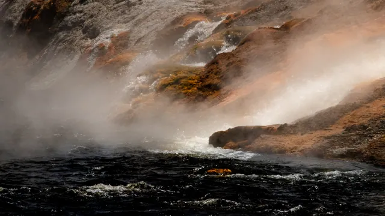
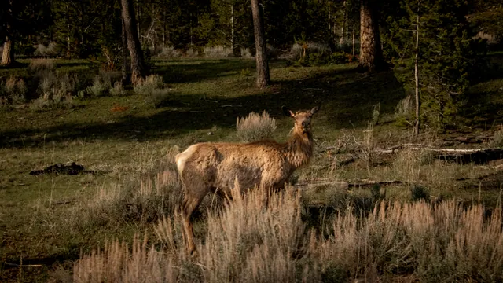
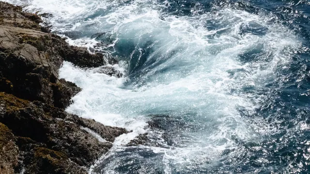
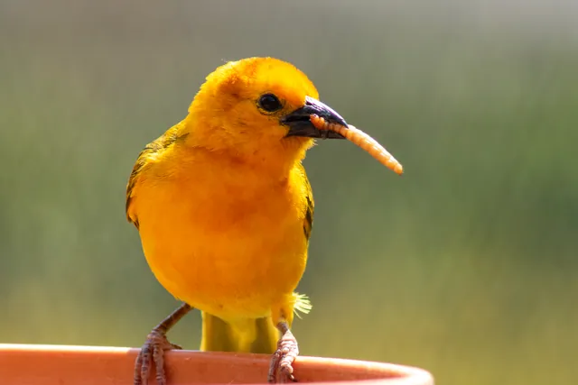

Photography
I love being outdoors, and landscape photography gives me a reason to slow down and notice how a place changes with the light. Here are a few of my favorite landscapes and some of the wildlife I’ve encountered along the way. I hope our paths cross out there someday.


















